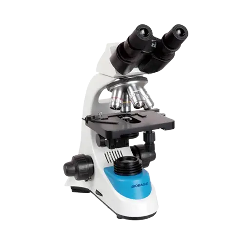
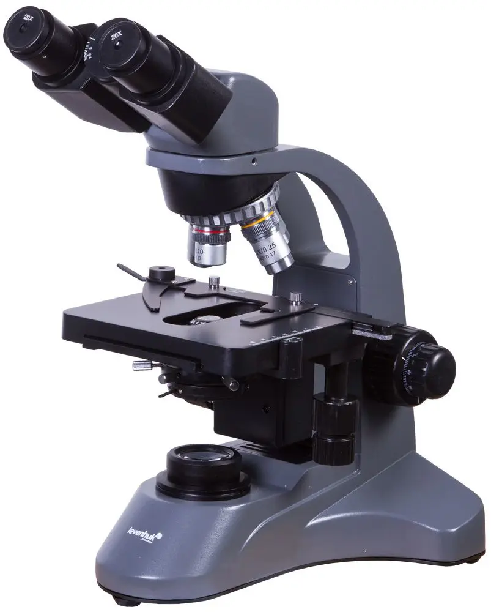
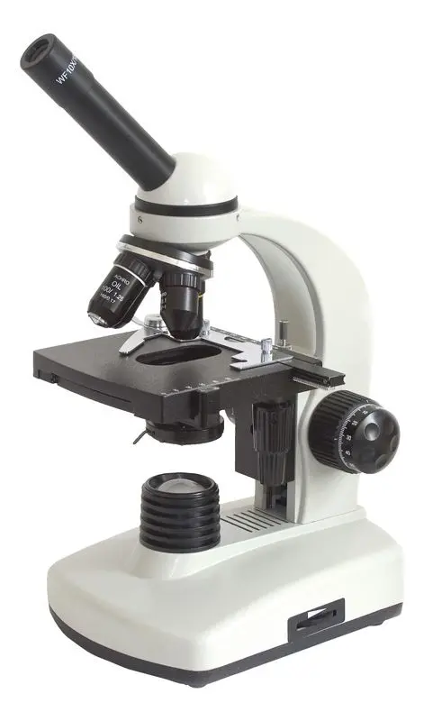
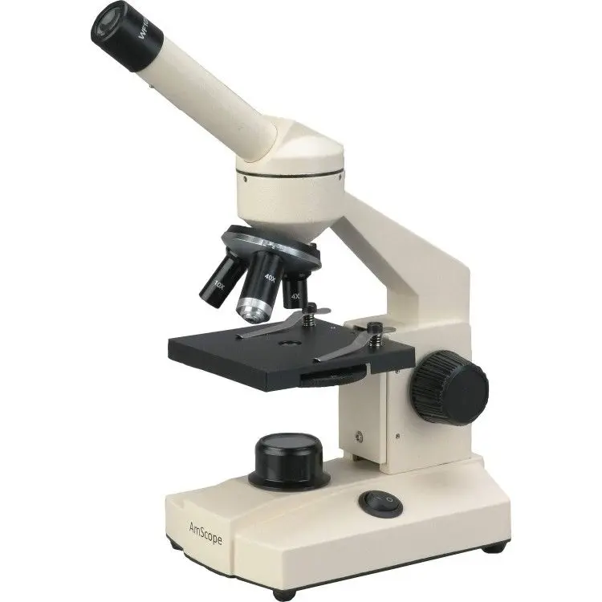

Microscope Binocular XS-208A
Microscope Binocular XS-208A adalah mikroskop cahaya dengan desain ergonomis, dilengkapi optik jernih dan pencahayaan LED hemat energi. Cocok digunakan di laboratorium pendidikan, klinis, maupun penelitian dasar.
- Tipe Kepala: Binokuler, miring 45° dan dapat diputar 360°
- Okuler: WF10x (wide field)
- Objektif: 4x, 10x, 40x (spring)
- Perbesaran Total: 40x – 400x
- Meja Preparat: Mekanik dengan penjepit & pengatur posisi
- Sistem Fokus: Koaksial, kasar & halus
- Pencahayaan: LED dengan intensitas dapat diatur
- Kondensor: Abbe NA 1.25 dengan diafragma iris